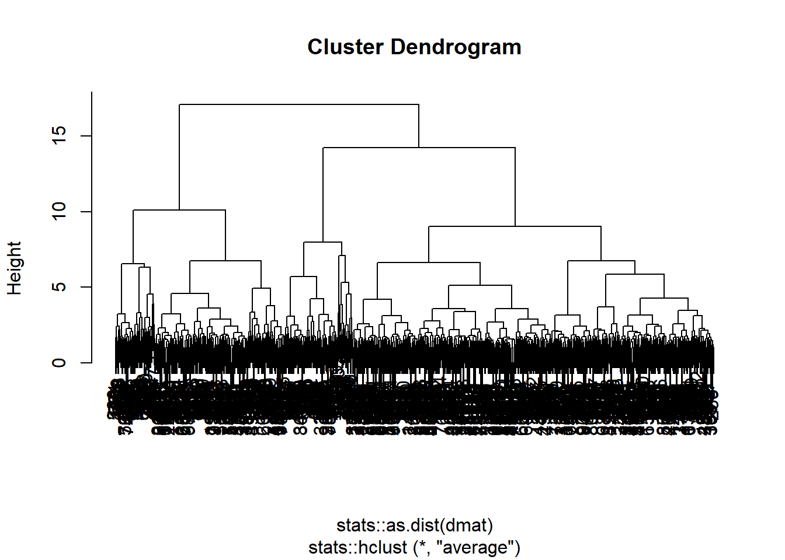
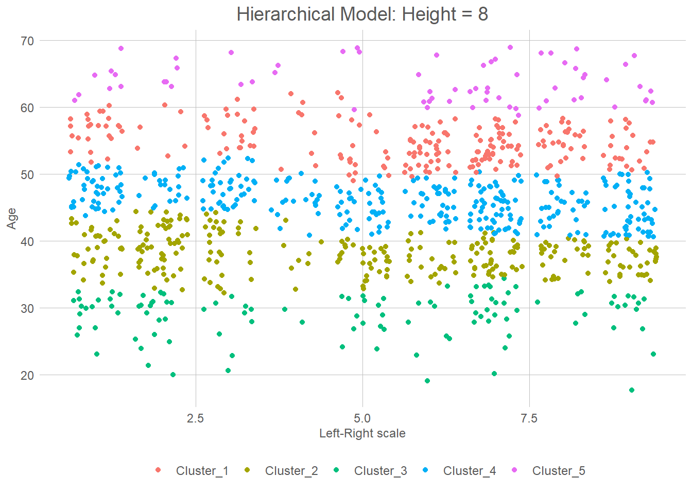
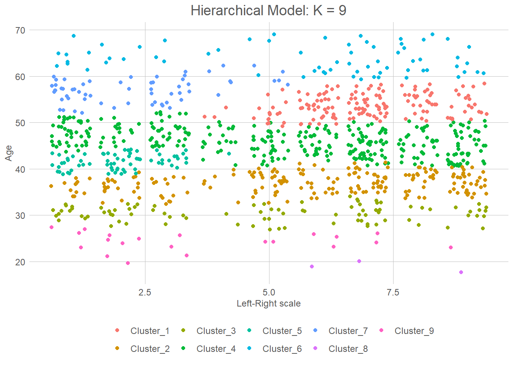

Unsupervised Machine Learning
Labels? We don’t speak of them here! As the machines have become sentient, and gtp soon will create a new world government, supervision is no longer needed nor appropriate. This is the part of the course where we will lean our chairs back and let the machines take control without us doing any work1. There are of course loads of reasons to do unsupervised learning. Firstly, you don’t have to manually create a lot of labels. Coding training data, selecting models, readjust, again, again, and again quickly becomes tiresome. Secondly, quite often we may now know what we are looking for! We might believe that there is some traits that make people more prone to vote for the Mensheviks, but which? One way of finding this may be to give the black box all data we have on the potential reactionaries, and from there find the important patterns.
In the next few pages we shall look at k-means, principal component analysis, hierarchical clustering, and how we interpret all of these. We shall use the same data in this analysis as we did when discussing statistical inference.
A quick look at the data
As in the inference part it’s an open secret that we of course have access to all the data. A short description may therefore be fitting:
The age distribution of these voters spans a cosmic range from 18 to 70 years, with the median age of 45 and a mean age hovering around 44.95. It’s a diverse cosmic ensemble, with the first quartile (25th percentile) settling at a cosmic mark of 38, while the third quartile (75th percentile) reaches for the cosmic skies at 52.
But let us not forget the cosmic districts from whence these voters hail. Each district has its cosmic presence, with names like Akerhus, Aust-Agder, Buskerud, and more. In each district, a cosmic multitude of voters casts their celestial ballots. The district counts range from 2203 in Buskerud, a modest cosmic gathering, to the towering numbers of 7656 voters in Hedmark. Between them, districts like Hordaland, Oslo, Rogaland, and Sør-Trøndelag stand as cosmic realms with their own celestial electorates.
Ah, and now we turn our gaze to the cosmic dance of votes. Each voter, a cosmic voice, aligns themselves with a political party. R, SV, AP, SP, MDG, KrF, V, H, and FrP—they each hold their cosmic sway. Among the voters, the percentages of their cosmic alliances shimmer before us. R resonates at 11.4%, SV echoes at 13%, AP hums at 7.5%, and the cosmic chorus continues with SP at 11.2%, MDG at 13.6%, KrF at 8.6%, V at 12.8%, H at 8.5%, and FrP at 13.3%.
In this cosmic symphony of data, we gain a glimpse into the age diversity of the voters, the cosmic populations of the districts they inhabit, and the celestial preferences they express through their votes. These cosmic threads intertwine, painting a picture of the political tapestry within the given districts, illuminating the cosmic landscape of voter demographics and allegiances.

K-means
K. How horrible of a letter to see in your tinder-chat! Doing machine-learning, however, it is actually quite nice. So, k here actually just means the number of clusters. Now you may ask, “why is it called K means, and not cluster-means, or c-means, or something?” That’s a very good question! Tell me when you find the answer. The concept behind it is however quite straight-forward. We assume that our, well whatever we are measuring, exist in some form of abstract space. In our case, lets focus on the right-left policy space and age. This will give us a two-dimensional space, or a plane should you feel fancy. This algorithm assumes that the data is numerical, so let’s first map the party-labels onto a scale.
# I've already made the "vote" variable a factor-variable, with the
# levels in the left-right order that I would like. To get a numerical
# variable in the same (correct) order then, I'll just coerce it to numerical.
valgdata$l_r <- as.numeric(valgdata$vote)
# It might be usefull to take a quick look at the data just to see that I was right
table(valgdata$vote, valgdata$l_r)
1 2 3 4 5 6 7 8 9
R 10471 0 0 0 0 0 0 0 0
SV 0 11037 0 0 0 0 0 0 0
AP 0 0 9626 0 0 0 0 0 0
SP 0 0 0 5707 0 0 0 0 0
MDG 0 0 0 0 9187 0 0 0 0
KrF 0 0 0 0 0 11329 0 0 0
V 0 0 0 0 0 0 18406 0 0
H 0 0 0 0 0 0 0 11154 0
FrP 0 0 0 0 0 0 0 0 13083# And as usual, I am So, the first question is of course whether there are any groups at all. It could be (if I didn’t manage to make correlated data) that party and age is completely random. One nice way of seeing that is to make a simple point plot. Preferably, we should see some signs of grouping behaviour. For good measure I’ll add the district variable as well.
#| warning: false
#| message: false
#| error: false
#| cache: true
valgdata %>%
slice_sample(n = 10000) %>%
ggplot(aes(l_r, age, colour = district)) +
geom_jitter() +
labs(x = "Left-Right scale", y = "Age") +
theme(axis.title = element_text())If you may allow it, I do find it quite clear that there is a pattern there. Seemingly, one can see 9 different groups that fit together. Of course, since this is unsupervised learning we don’t have any labels, and we don’t know what those 9 groups fitting to a left-right scale are. However, they may absolutely be there. Lets begin to try and find the clusters. To do so we will use the kmeans function. It accepts a set of vectors, and a number of clusters. How many clusters it should use is something we have to select based on, well, what we believe fits.
cluster <- kmeans(
valgdata %>%
select(age, l_r),
centers = 9)Well that was easy. All that talk of machine learning being the future end of civilisation, and it’s only 4 lines of code. Question then of course is whether it actually found something interesting. Lets first take a look at some of the data present. The new object we created (fittingly called cluster) contains a component showing which cluster each of the observations in our dataset, as well as some information about the clusters. For example, we can take a look at the means of each cluster which are their centre.
| age | l_r | size | withinss | cluster |
|---|---|---|---|---|
| 64.53780 | 5.293557 | 4299 | 52592.14 | 1 |
| 47.24856 | 2.470569 | 12130 | 78319.59 | 2 |
| 55.01878 | 2.495581 | 7242 | 45247.80 | 3 |
| 26.57290 | 4.986195 | 7099 | 119409.67 | 4 |
| 40.21687 | 4.991492 | 18218 | 169067.81 | 5 |
| 45.21474 | 7.297763 | 15153 | 73477.72 | 6 |
| 58.46942 | 7.010120 | 6917 | 37028.07 | 7 |
| 51.71201 | 7.088601 | 13431 | 71462.62 | 8 |
| 34.45155 | 5.323448 | 15511 | 173187.60 | 9 |
So, what do we see? Well, it is a bit difficult to interpret tbh. The first cluster seems to be a politically centre older people cluster? Cluster three is more to the left, and middle aged. The cluster object also gives us the fitted cluster for every unit in our dataset. We can therefore add them inn, and plot again.
valgdata %>%
bind_cols(cluster$cluster) %>%
rename("cluster" = "...8") %>%
ggplot(aes(l_r, age, colour = as.factor(cluster))) +
geom_jitter() +
labs(x = "Left-Right scale", y = "Age") +
theme(axis.title = element_text()) New names:
* `` -> `...8`So what can we see here? Well, it is firstly clear that there is a strong age grouping. Unsurprisingly, the same can also be said for party. This makes it somewhat easier to interpret our table. Cluster 8, for example, is clearly on the left and for the most part a bit over 40 years old. Cluster 4 is interesting in that it is nearly uniformly distributed across the left-right dimension, but only contains people under 30. The most important dimension here seems to be age-dimension. That also seem intuitive given the little known fact that party is actually a function of age! You might wonder whether these 9 clusters are the best we can get, or whether 9 is the perfect amount of clusters. We will come back to that when discussing model selection.
Hierarchical Clustering
Ahh, to be free and independent. A bird floating through the skies. That may be how we described the neighbors in our k-means models, but here in the hierarchical models, life is nothing like it. Here, my good friend, we are in the world of lords and ladies, one clearly below the other! In this intricate hierarchy, every entity has its place and role to play. Just as the lords and ladies govern their domains, hierarchies govern our models, dictating the relationships and structure of the data. Each level represents a different tier, with the upper echelons holding authority and power, while the lower levels serve and support. It is a world of intricate relationships, where the lower entities strive to ascend and gain favor with their superiors. While it may lack the freedom of the k-means models, the hierarchical approach provides a deep understanding of the intricacies within the data, allowing us to navigate its complexity with precision and finesse.
The idea in these models is that instead of just having clusters, we may have clusters of clusters (of clusters of clusters of clusters…). Eventually we will have a map of groups and how these relate to each other. Lets add the district data to our model and see if we can find something with that. From this point on we will also use the tidymodels framework.
# To use tidymodels we have to load a few extra packages
# Lets first look at how we can specify the same model as
# the on above.
pacman::p_load(tidymodels, tidyclust)
kmeans_spec <- k_means(num_clusters = 9) # Defining the type of model, k_means with
# 9 clusters
kmeans_fit <- kmeans_spec %>%
fit(~age + l_r, # Which variables we want to use
data = valgdata)
tidy(kmeans_fit) %>%
gt() # And here we can see the exact same data as before!| age | l_r | size | withinss | cluster |
|---|---|---|---|---|
| 39.73392 | 7.132275 | 13041 | 61883.51 | 1 |
| 24.41091 | 5.583467 | 3738 | 51521.29 | 2 |
| 60.86585 | 5.591379 | 11808 | 207228.91 | 3 |
| 52.64734 | 5.212180 | 20558 | 214933.68 | 4 |
| 44.70488 | 2.344932 | 12588 | 86654.93 | 5 |
| 46.17644 | 7.188668 | 17332 | 100679.51 | 6 |
| 37.25938 | 2.321591 | 7892 | 37939.86 | 7 |
| 30.25790 | 2.898326 | 4839 | 31022.11 | 8 |
| 33.50012 | 7.370063 | 8204 | 45825.49 | 9 |
# Note that it doesn't actually has to be, kmeans could
# find what is known as a *local* and not *global* maxima
# when fitting the model, which may create a form of randomness.
#To specificy a hierarchical cluster, we do nearly the same as above
hier_data <- valgdata %>%
slice_sample(n = 1000) #A 100K observatiosn was a bit too much for my poor pc :(
hierarchical <- hier_clust(
linkage_method = "average"
)
hier_fit <- hierarchical %>%
fit(~age + l_r + district, # Which variables we want to use
data = hier_data)
hier_fit$fit %>%
plot()
The key advantage of hierarchical clustering is that it allows for different degrees of granularity. In the plot here you can see how each data-point first get it owns cluster, then is merged with the ones closest to them to form a cluster. Just as in k nearest means. Then these clusters, are merged with the closest clusters. Then those are merged with the closest clusters. Then those are merged…
As you can see in our dendogram (that this weird plot we have above here) we eventually end up with on final super-cluster. The nice thing about this, instead of the former model, is then of course that we can choose what we find to be a fitting number of clusters. Not so spread out that we just have the data points, and not so few that we only have the data set.
As we did above we above, we can also fit the clusters back to the observation. This, of course, becomes slightly different to how we did it in the kmeans model. Since we now have clusters of clusters (of clusters of clusters) we must tell the predicton model how we would like to seperate them out. There are two ways we can specify it. Looking back at the dendogram, you will notice a height dimension. The lower it is, the more groups are present. The other alternative is to do the same as when we made the k nearest means model, and just define the number of clusters we would like.
hier_fit %>%
extract_cluster_assignment(cut_height = 8) %>%
summary() .cluster
Cluster_1:216
Cluster_2:272
Cluster_3:113
Cluster_4:332
Cluster_5: 67 #Here we can see that we got 6 clusters, we can then make the same plot as above
hier_data %>%
bind_cols(
hier_fit %>%
extract_cluster_assignment(cut_height = 8)
) %>%
ggplot(aes(l_r, age, colour = as.factor(.cluster))) +
geom_jitter() +
labs(x = "Left-Right scale", y = "Age") +
theme(axis.title = element_text()) +
labs(x = "Left-Right scale", y = "Age", title = "Hierarchical Model: Height = 8")+
theme(axis.title = element_text()) 
# Or we can try choosing 9 clusters again
hier_data %>%
bind_cols(
hier_fit %>%
extract_cluster_assignment(num_clusters = 9)
) %>%
ggplot(aes(l_r, age, colour = as.factor(.cluster))) +
geom_jitter() +
labs(x = "Left-Right scale", y = "Age") +
theme(axis.title = element_text()) +
labs(x = "Left-Right scale", y = "Age", title = "Hierarchical Model: K = 9") +
theme(axis.title = element_text()) 
Footnotes
Ok, so that’s my first lie. We will do some work. Just not as much as the guys doing supervised learning.↩︎